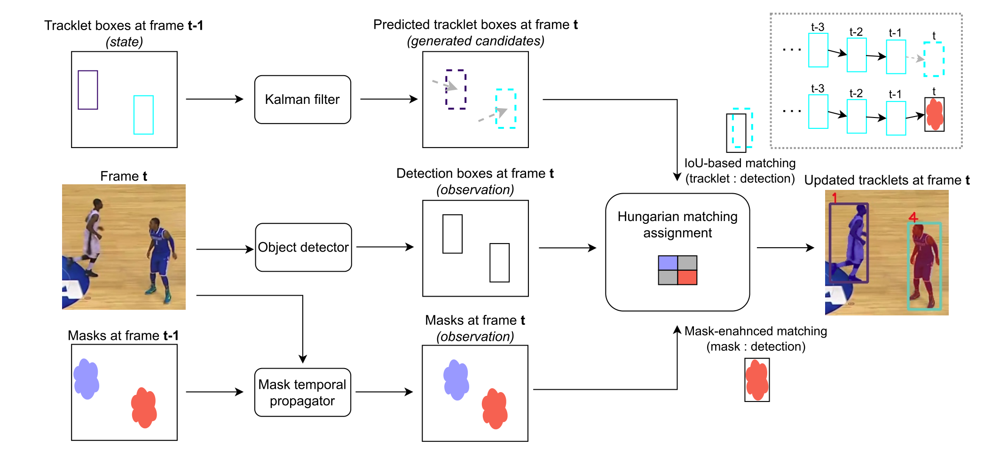
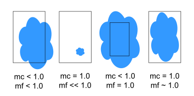
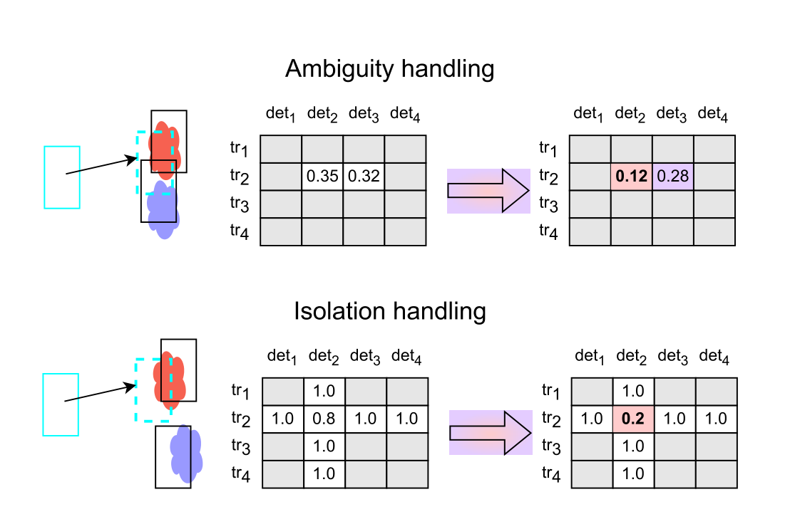

McByte
Overview
McByte extends a BoT-SORT-style tracking-by-detection pipeline with an optional mask-conditioned association stage. Instead of relying only on IoU and detection confidence, McByte can use a temporally propagated segmentation mask per track as extra evidence when an IoU-based match is ambiguous. Clear, unambiguous matches are locked before mask evidence is considered, so masks only influence genuinely uncertain pairs (and, optionally, isolated low-IoU candidates). Because the mask evidence comes from general-purpose, pre-trained segmentation models, McByte requires no per-video or per-dataset tuning. Mask management is optional and disabled by default: without it, McByte behaves as a clear-match-locking, reduced-assignment variant of the ByteTrack/BoT-SORT association pipeline using IoU alone.
McByte was originally developed by Tomasz Stańczyk at Inria, in the STARS (Spatio-Temporal Activity Recognition of Social interactions) team. The Trackers implementation is a clean-room adaptation of the original McByte code and paper.
Optional heavyweight dependencies
The default mask pipeline uses Segment Anything (SAM) for mask initialization and Cutie for temporal mask propagation. Both require torch/torchvision plus their own installation steps and are not installed by pip install trackers. McByteTracker can be constructed and used without either — set enable_mask_manager=True only after installing SAM and Cutie, or supply a custom mask_manager (for example a lightweight test double) instead.
How does McByte compare to other trackers?
For comparisons with other trackers, plus dataset context and evaluation details, see the tracker comparison page.
The per-dataset results below compare McByte (mask-conditioned association enabled) against BoT-SORT without re-identification — the baseline association pipeline McByte builds on — using default parameters for both trackers, with no dataset-specific tuning.
| Tracker | HOTA | IDF1 | MOTA |
|---|---|---|---|
| BoT-SORT | 63.7 | 78.7 | 79.2 |
| McByte | 64.1 | 79.7 | 79.1 |
| Tracker | HOTA | IDF1 | MOTA |
|---|---|---|---|
| BoT-SORT | 73.8 | 73.4 | 96.9 |
| McByte | 76.5 | 76.9 | 97.0 |
| Tracker | HOTA | IDF1 | MOTA |
|---|---|---|---|
| BoT-SORT | 84.5 | 79.3 | 96.6 |
| McByte | 85.0 | 79.9 | 97.0 |
| Tracker | HOTA | IDF1 | MOTA |
|---|---|---|---|
| BoT-SORT | 57.8 | 57.9 | 92.2 |
| McByte | 67.2 | 68.6 | 92.5 |
Source: PR #513, reported by the McByte author against Trackers' BoT-SORT baseline.
Algorithm
McByte keeps the same tracking-by-detection backbone as BoT-SORT — Kalman prediction, optional camera motion compensation (CMC), and multi-stage confidence-aware IoU association — and adds clear-match locking plus optional mask conditioning around the assignment step.

t-1 to t: the Kalman filter state (tracklet boxes) and the mask state (per-tracklet segmentation masks). Predicted boxes and propagated masks both feed the assignment step — IoU drives matching, and mask evidence resolves the ambiguous or isolated pairs.Processing flow. Detections → Kalman prediction → optional CMC → multi-stage IoU association → clear-match locking → mask-conditioned ambiguous association (if a mask manager is configured) → reduced linear assignment → tracklet lifecycle update.
Clear-match locking. Within each association stage, a track-detection pair whose similarity clears the stage threshold is locked immediately when it is the only eligible candidate in both its row and column. Locked pairs skip the Hungarian solver entirely, so mask evidence never has a chance to disturb matches that are already unambiguous.
Mask conditioning. The remaining, non-locked pairs form a reduced similarity matrix. When a MaskManager is configured and a propagated mask meets its confidence and overlap requirements (minimum_mask_average_confidence, minimum_mask_coverage, minimum_mask_fill_ratio), the mask evidence is added into that pair's similarity score before assignment. Optionally (enable_isolated_mask_matching), an isolated candidate with positive but below-threshold IoU can also be rescued by strong mask evidence. The Hungarian algorithm then solves the reduced assignment problem, and matches are mapped back to the original track and detection indices.
Mask scoring: coverage and fill. For a tracklet i (the mask owner) and a candidate detection box j, McByte computes two overlap scores between the tracklet's propagated mask and the detection box:
Mask coverage (mc, controlled by minimum_mask_coverage) is the fraction of the tracklet's mask pixels that fall inside the detection box. Mask fill (mf, controlled by minimum_mask_fill_ratio) is the fraction of the detection box's pixels covered by the mask. mc is used only as a gating condition; mf serves as both a gating condition and the value added to the similarity score. The four cases below build the intuition — a strong match needs both scores high:

mc) and mask fill (mf) for a mask (blue) against a detection box. A reliable match needs both high: partial overlap lowers mf, a tiny box inside a large mask lowers mf, and a box larger than the mask lowers mc.Mask evidence is applied only to genuinely uncertain pairs — those that are ambiguous (several detections competing for one tracklet) or, with enable_isolated_mask_matching, isolated (the right detection sits just below the IoU threshold). In both cases the mask nudges the reduced similarity matrix toward the correct assignment:

mf to the similarity matrix steers the Hungarian assignment toward the mask-consistent detection.Similarity matrix, not cost matrix
The original ByteTrack/BoT-SORT/McByte formulate association over a cost matrix and subtract the mask evidence (costs[i,j] -= mf). Trackers uses a similarity matrix instead, so the equivalent update is an increase: similarities[i,j] += mf.
Mask lifecycle. With mask management enabled, masks for frame t are prepared before association on frame t, using the tracker state from frame t-1: MaskManager initializes masks for newly created tracklets with SAM and propagates existing masks forward with Cutie. Temporarily lost (but still alive) tracklets keep their masks; masks are only dropped once a tracklet is pruned. This means a frame is required both for CMC and for mask updates — when no frame is passed to update(), both are skipped and McByte behaves as pure clear-match-locking IoU association.
Track lifecycle. New tracks are created from unmatched high-confidence detections and confirmed after minimum_consecutive_frames consecutive matches. Unmatched unconfirmed tracks are removed; confirmed tracks unmatched for more than lost_track_buffer frames are deleted.
Key Parameters
| Parameter | Default | Purpose | Tuning guidance |
|---|---|---|---|
lost_track_buffer |
30 |
Frames to keep an unmatched track alive before deletion (specified in 30 FPS units, scaled proportionally by frame_rate). |
Higher tolerates longer occlusions/camera shake but can increase false re-association. 10-30 common; up to 60 for long gaps. |
frame_rate |
30.0 |
Frame rate of the source, used to scale lost_track_buffer into real time. |
Set to the video's actual FPS so buffer and occlusion tolerances stay consistent across different frame rates. |
track_activation_threshold |
0.7 |
Minimum detection confidence required to start a new track. | Higher reduces noisy track creation; lower retains harder objects. 0.5-0.9 typical depending on detector quality. |
minimum_consecutive_frames |
2 |
Consecutive matches required before confirming a new track. | 1 for immediate activation; 2-3 improves robustness against flicker and false positives. |
instant_first_frame_activation |
True |
Whether tracklets created on the very first frame receive confirmed IDs immediately, bypassing minimum_consecutive_frames. |
Keep True to emit IDs from frame 1; set False to require the normal confirmation streak even at sequence start. |
minimum_iou_threshold_first_assoc |
0.1 |
Minimum association similarity for the first pass (high-confidence detections vs. confirmed and lost tracks). | Intentionally lower than in BoT-SORT: it only rejects clearly implausible pairs, leaving a broader candidate set for mask-conditioned association to resolve. |
minimum_iou_threshold_second_assoc |
0.5 |
Minimum association similarity for the second pass (low-confidence detections vs. remaining tracked tracks). | Usually set lower than the first-pass threshold to recover weak detections without over-matching. |
minimum_iou_threshold_unconfirmed_assoc |
0.3 |
Minimum association similarity when associating unconfirmed tracks. | Higher values make tentative tracks harder to confirm spuriously; lower values help short-lived or noisy objects survive. |
high_conf_det_threshold |
0.6 |
Confidence split between stage-1 and stage-2 detections. | 0.5-0.7 common. Higher shifts more detections to the recovery stage; lower gives stage-1 broader coverage. |
enable_cmc |
True |
Enables camera motion compensation before association. | Keep enabled for moving-camera footage (sports, drone, handheld). Disable mainly for static cameras if you need maximal speed. |
cmc_method |
"sparseOptFlow" |
Camera motion compensation method (see BoT-SORT). | sparseOptFlow is a good general-purpose choice. |
cmc_downscale |
6 |
Downscale factor applied to frames before camera motion compensation. | Factor 6 is McByte's aggregate-performance default, not a strict per-clip guarantee. Use 2 to preserve the previous behavior or for conservative per-sequence stability; see Performance and optimization. |
enable_mask_manager |
False |
Whether to construct McByte's default SAM + Cutie mask pipeline. | Off by default so importing/using McByteTracker never requires the optional SAM/Cutie dependencies. Enable only after installing them, or pass a custom mask_manager. |
mask_config |
None |
McByteMaskConfig used to build the default mask pipeline. Requires enable_mask_manager=True; mutually exclusive with mask_manager. |
Adjust when you need a non-default SAM/Cutie checkpoint, model variant, or device. |
minimum_mask_average_confidence |
0.6 |
Minimum average confidence a propagated mask must have before it can influence association. | Raise to trust masks only when Cutie is confident; lower to let weaker masks still contribute. |
minimum_mask_coverage |
0.9 |
Minimum fraction of a tracklet's mask that must fall inside a candidate detection box. | Raise for stricter geometric consistency between mask and box; lower to tolerate partial occlusion. |
minimum_mask_fill_ratio |
0.05 |
Minimum fraction of a candidate detection box's area that must be covered by the tracklet mask. | Raise to avoid matching a small mask fragment to an oversized box; lower to allow slimmer objects to match larger boxes. |
enable_isolated_mask_matching |
False |
Whether mask evidence may rescue an isolated candidate with positive IoU below the normal stage threshold. | Conservative default. Enable to recover more matches under heavy occlusion at the risk of more false positives. |
minimum_mask_creation_frames |
3 |
Consecutive visible frames a confirmed tracklet needs before its mask is created (SAM prompt + Cutie add_masks). |
1 creates masks on a tracklet's first visible frame (immediate-creation timing). Higher values defer the per-appearance mask encode for short-lived tracklets, at the cost of IoU-only association until the mask exists. |
Mask Pipeline Parameters (McByteMaskConfig)
McByteMaskConfig is only used when McByteTracker builds its default SAM + Cutie pipeline (enable_mask_manager=True and no custom mask_manager supplied).
| Parameter | Purpose | Default |
|---|---|---|
device |
Device shared by SAM and Cutie, e.g. "cuda", "cuda:0", "cpu", or "auto" to resolve automatically. |
"auto" |
sam_checkpoint_path |
Optional SAM checkpoint path. When omitted, the default checkpoint for sam_model_type is downloaded automatically. |
None |
sam_model_type |
SAM model variant used for box-prompted mask generation. | "vit_b" |
cutie_weights_path |
Optional Cutie checkpoint path. When omitted, the default checkpoint for cutie_model_type is downloaded automatically. |
None |
cutie_model_type |
Cutie model variant used for temporal mask propagation. | "base-mega" |
cutie_config_path / cutie_config_name |
Optional Cutie Hydra configuration directory / name. | None / "eval_config" |
cutie_use_amp |
Whether Cutie may use automatic mixed precision (only activated on a CUDA device). | False |
cutie_max_internal_size |
Maximum shortest side Cutie processes internally; larger frames are downscaled before the encoder and masks are resized back. -1 propagates at full input resolution (substantially slower). |
480 |
cutie_mem_every |
How often, in frames, Cutie updates its working memory. Higher values speed up processing. None keeps Cutie's own configured value. |
10 |
cutie_use_long_term |
Whether Cutie uses bounded long-term memory, recommended for videos longer than roughly one minute. None keeps Cutie's own configured value. |
True |
cutie_channels_last |
Opt-in channels_last memory format for the Cutie model. Off by default; primarily helps CUDA and may alter kernel selection. |
False |
cutie_compile |
Opt-in torch.compile of Cutie's shape-stable per-frame encoder path. Incurs first-call warmup and may alter numerics. |
False |
mask_creation_bbox_overlap_threshold |
Bounding-box overlap fraction at or above which mask creation for a new tracklet is delayed. | 0.6 |
Run on video
The example below runs McByte in its lightweight, mask-free configuration (clear-match locking with IoU only), which needs no extra dependencies beyond trackers itself.
import cv2
import supervision as sv
from rfdetr import RFDETRMedium
from trackers import McByteTracker
tracker = McByteTracker()
model = RFDETRMedium()
box_annotator = sv.BoxAnnotator()
label_annotator = sv.LabelAnnotator()
video_capture = cv2.VideoCapture("<SOURCE_VIDEO_PATH>")
if not video_capture.isOpened():
raise RuntimeError("Failed to open video source")
while True:
success, frame_bgr = video_capture.read()
if not success:
break
frame_rgb = cv2.cvtColor(frame_bgr, cv2.COLOR_BGR2RGB)
detections = model.predict(frame_rgb)
detections = tracker.update(detections, frame=frame_bgr)
annotated_frame = box_annotator.annotate(frame_bgr, detections)
annotated_frame = label_annotator.annotate(
annotated_frame,
detections,
labels=detections.tracker_id,
)
cv2.imshow("RF-DETR + McByte", annotated_frame)
if cv2.waitKey(1) & 0xFF == ord("q"):
break
video_capture.release()
cv2.destroyAllWindows()
To enable the full SAM + Cutie mask pipeline, install SAM and Cutie (see the PR #513 installation notes), then construct the tracker with enable_mask_manager=True and, optionally, a McByteMaskConfig. Everything else in the loop above stays the same — only the tracker construction changes:
from trackers import McByteMaskConfig, McByteTracker
tracker = McByteTracker(
enable_mask_manager=True,
mask_config=McByteMaskConfig(device="cuda"), # SAM + Cutie run on GPU
)
A frame is required for masks to propagate
Masks (and CMC) update only when a frame is supplied, so keep passing frame=frame_bgr to update(). When update() is called without a frame, McByte silently falls back to pure clear-match-locking IoU association.
Performance and optimization
The mask pipeline is the expensive part of McByte. Cutie, the temporal mask propagator, is the heaviest component: it stores all masks as one (N, H, W) tensor (N ≈ number of tracklets, H×W = frame resolution) and recomputes the whole tensor on every frame, so cost grows with both the number of tracked objects and the frame size. SAM, the initial mask creator, is lighter because it only runs when new tracklets appear. The mask-free configuration (enable_mask_manager=False) has none of this overhead.
Ideas for speeding up the full pipeline, from least to most invasive:
- Tune Cutie's internal mask resolution. McByte's own default (
McByteMaskConfig.cutie_max_internal_size = 480) already downscales to a 480px shortest side before propagation, resizing the mask back before it reaches the tracker — raw Cutie's owneval_configdefault of-1(no resizing, full input resolution) is not what McByte runs out of the box. Loweringcutie_max_internal_sizebelow480trades further precision for speed; setting it to-1reverts to full-resolution propagation, which is slower, not faster. Smaller masks are less precise, especially under occlusion or for small objects, which can affect association quality. - Propagate less often. Running Cutie every few frames instead of every frame cuts the dominant cost, but requires changes in
mask_manager.py/ the tracker'supdate()call, and careful handling of the add-mask/remove-mask events when tracklets are created or terminated. - Use a smaller SAM model.
McByteMaskConfig(sam_model_type=...)can select a lighter SAM variant, trading initial-mask quality for speed. - Downscale CMC input. McByte's
cmc_downscaleaggregate-performance default changed from2to6; genericCMCConfigandBoTSORTTrackerremain at2. On the complete 45-clip SportsMOT validation split at 1280x720, using ground-truth detections withenable_mask_manager=False, factor6reduced median CMC latency by approximately 50% versus factor2. Combined and mean HOTA/IDF1 improved, while median per-sequence HOTA/MOTA/IDF1 deltas were neutral. Nine clips regressed under the previous strict per-clip gate, so the new default is not a strict per-clip quality guarantee. Passcmc_downscale=2to preserve prior behavior or when conservative per-sequence stability matters, and benchmark other detectors, resolutions, or domains.
Each option can change association output and tracking metrics. Benchmark on your own data before committing to a setting, especially when input resolution or scene type differs from SportsMOT 720p.
Benchmarking
To run McByte over a complete benchmark test set (MOT17, DanceTrack, SportsMOT, or SoccerNet-tracking) and write one MOTChallenge-format result file per sequence, use the trackers benchmark mcbyte CLI command:
See the McByte Benchmarks guide for how to supply dataset paths and read the CLI reference.
Reference
Stanczyk, T., Yoon, S., and Bremond, F. (2025). No Train Yet Gain: Towards Generic Multi-Object Tracking in Sports and Beyond. arXiv:2506.01373. Original implementation: tstanczyk95/McByte.